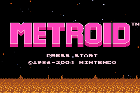
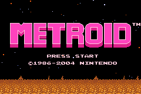

Classic NES Series - Metroid (USA, Europe)
EEPROM 64K Save Format Spec gbakit Built-In 💾 MultiBoot
Cartridge Identity
- Game Code
FMRE(FamilyFMR)- Header Title
NES METROID- Maker / Revision
01/ rev0- ROM Size
- 1.0 MiB (1,048,576 B)
- Save Media
EEPROM 64K- SHA-256
038ee8d37fadf7711fe331a0d3c96c93dd85d2b5f57fdd1575030f57ced85db4
Screenshots


Link Cable & Multiplayer Communications
This title contains detected communication capabilities: 💾 MultiBoot.
Detailed protocol specifications, SIO registers, Joybus commands, and MultiBoot sequences are documented in the Link & Multiplayer Reference.
- Single-Cart MultiBoot
- Single-Cartridge MultiBoot (Download Play) client/server handler · Thumb SWI 0x25 (
0xDF25):0x0a2cde,0x0b7730,0x0dc596,0x0e3a6c
Battery Save Format Specification
Open Full Save Format SpecDownload save-format.json
- Specification Coverage
- 4 mapped fields · 0 verified checksum(s) · Confidence: HIGH
- gbakit Built-In Support
- Built-in (FMRE)
gbakit save verify FMRE save.sav
gbakit save decode FMRE save.sav
gbakit save fix FMRE damaged.sav -o repaired.savObserved Battery Save Layout
- Fill Byte & Active Size
0x00fill · 512–512 / 8,192 B active (entropy 0.16 bits/B)- Active Offset Ranges
0x0–0x1FF(1 total)- ASCII Magic / Headers
ORTE- Observed Variable Regions
- 0 bytes across 0 spans: None
- Candidate Checksum/Counter Spans
- None
Text, Fonts & Scene Data
- Primary Text Encoding
- Compressed / custom-encoded text
- Font & VWF Indicators
- No VWF Table No 1bpp Font · BIOS SWIs: BitUnPack
0x10:20· LZ770x11/12:19· Huffman0x13:8· RLE0x14/15:17 - Scene & Packaging
0ROM pointer tables (≥32 entries,0≥200) ·0relativeu32TOCs ·62OAM metasprite hits
Regional Variants & Revisions (Family FMR)
- Famicom Mini 23 - Metroid (Japan) (
FMRJ, 4 MiB)